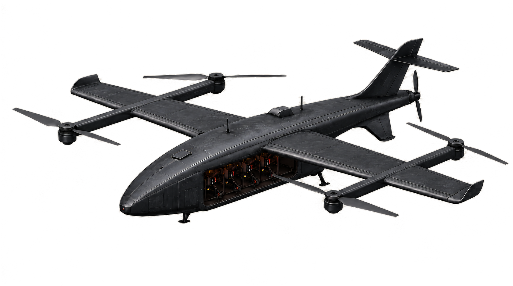

STRID
Advancing the frontlinefor allied forces.

Expendable airframes got cheap. Getting capability to the objective did not. A one-way aircraft throws away its radio, its autonomy and its sensors along with the warhead — and you buy that stack again on the next sortie, and the one after that. STRID One is built to bring the expensive part home.
Expendable systems get cheaper every year. Getting them to the fight does not. Strid is built around a single idea — autonomous carriers that survive the mission — applied wherever attrition warfare goes next.